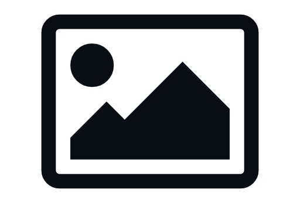
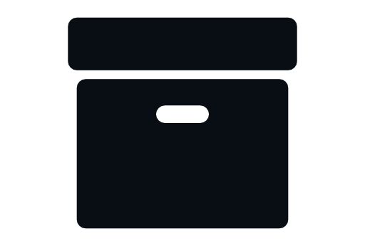

Multimedia MediaSoft
Multimedia Educativa para la enseñanza de
Diseño
de Aplicaciones Multimedia para los estudiantes
de la carrera "Licenciatura en Educación Informática".
Versión 1.0.0.0
+ Acerca de Mediasoft
Este producto fue creado como herramienta de apoyo para la enseñanza de la
asignatura “Diseño de Aplicaciones Multimedia”
su contenido
se centra en el uso de la herramienta de autor Machtware
mediator 9.
Constituye una poderosa herramienta para el profesor como medio
de
enseñanza en la formación del estudiante desarrollando habilidades
en el diseño de presentaciones electronicas, multimedia
educativas
y recursos didácticos en función del proceso de enseñanza aprendizaje..
Módulo de Contenidos
Este módulo recoge todo lo relacionados con los temas que se imparten en la asignatura, las guias de estudio,conferencias, el programa de estudio y la bibliografía.
Módulo Videotutoriales
Este módulo no es más que una galería de videos que explican los primeros pasos con la herramienta de autor Matchware Mediator. Contiene ejercicios y ejemplos básicos que el profesor puede poner en práctica durante las clases o el estudio individual del estudiante.
Módulo Documentación
En este módulo se puede consultar la documentación realacionada con el lenguaje de programación que utiliza la herramienta de autor Matchware Mediator, su manual de usuario y un grupo de recursos bibliograficos vinculados al diseño de aplicaciones multimedia y recursos educativos
Módulo Ejercicios
Este módulo agrupa un grupo de ejercicios de laboratorio que le permiten al profesor evaluar a los estudiantes, también contiene un grupo de ejercicios de autoevaluación y guías prácticas que le permiten al estudiante medir los conocimientos adquiridos en clases y su desempeño en el uso de la herramienta de Autor Matchware Mediator
Módulo Glosario
El Glosario de términos es un modulo interactivo que permite al estudiante y al profesor acceder a un grupo de términos y conceptos relacionados con el diseño de aplicaciones multimedia.
Beneficios
-
Medio de enseñanza
Sirve de apoyo al profesor en la enseñanza de asignaturas como: Diseño de Aplicaciones Digitales, y constribuye a la formación de competencias en los estudiantes en el diseño de aplicaciones multimedia.
-
Fortalece el proceso docente educativo.
Aporta un poderoso instrumento en la enseñanza y creación de recursos didacticos que sirvan de apoyo al proceso de enseñanza y aprendizaje.
-
Fomenta el desarrollo y la innovación
Contribuye al desarrollo de software educativo y a la presentación de trabajos en formato multimedia en eventos cientificos y en ejercicios de culminación de estudios de los propios estudiantes.
Herramientas Utilizadas
-
 Ulead Photoimpact X3+
Programa de tratamiento fotográfico... -
Autoplay Media Studio 8
Entorno Visual de Integración Multimedia. -
Lua y HTML5
Lenguajes técnico de programación. -
Movavi Video Editor
Editor de Video... -
FlaX 5
Programa para hacer animaciones de texto... -
 Install Creator
Empaquetador de aplicaciones windows...
Instalación
Requerimientos
- Microprocesador Intel Celeron 1.5 Hz o superior
- 256Mb de Memoria Ram
- 1GB de espacio Libre en Disco
- Targeta Gráfica 128Mb
- Resolución de Pantalla 1024 x 768Mb
Plugins y Aplicaciones
- Microsoft WebView2 Runtime: x86.
- Flash player 10 Active x.
- DirectX 9c.
- Adobe Acrobat Reader.
Multimedia MediaSoft
Versión Demo